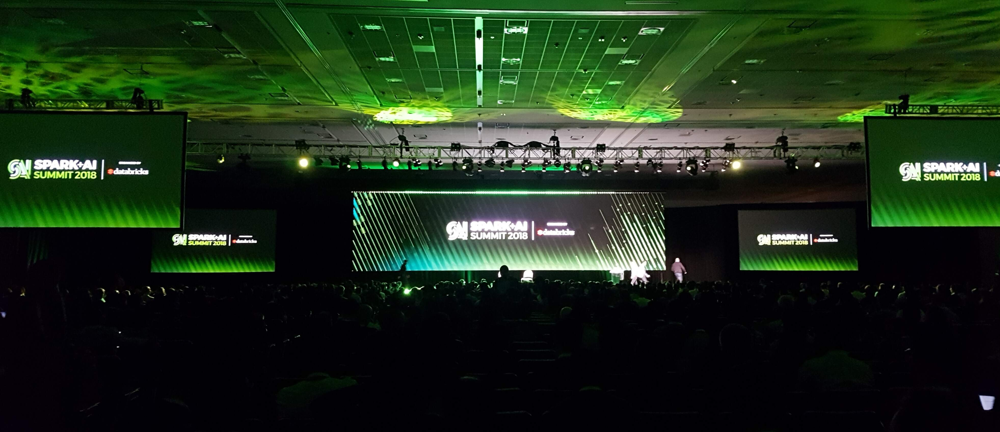
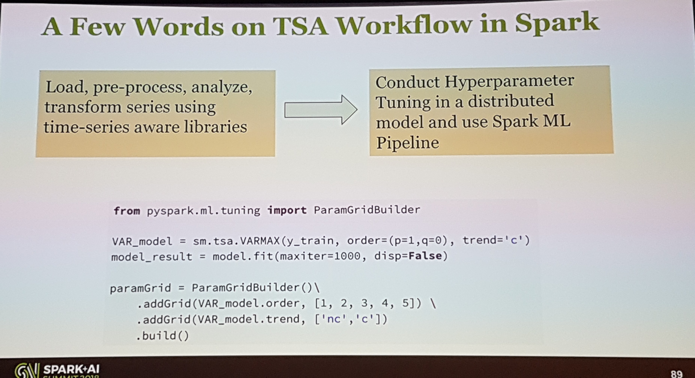

Spark Summit + AI 2018
This post was originally published in the GoDataDriven blog
Last Tuesday and Wednesday Ivo Everts and I attended the Spark+AI Summit 2018 conference in San Francisco. Ivo gave a presentation about Predictive Maintenance at the Dutch Railways and I presented the AI case GDD implemented at Royal FloraHolland Operation Tulip: Using Deep Learning Models to Automate Auction Processes.

As a data scientist, I really appreciated that there was a data science track, a deep learning track, and an AI track. Initially, expected to be mostly engineering, but as you will see below, there was plenty of good data science around.
Here are the highlights of the talks I attended each day. 1
Note: for those non-technical readers I list some non-tech talks.
Day 1
Project Hydrogen: Unifying State-of-the-art AI and Big Data in Apache Spark
Reynold Xin (Co-founder and Chief Architect @ Databricks)
Databricks unveiled project Hydrogen, which aims to solve the fact that distributed ETL Spark jobs don't play well together with deep learning frameworks. As Databricks Chief Architect Reynold Xin says, there's a fundamental incompatibility between the Spark scheduler and the way distributed machine learning frameworks work. 2 Project Hydrogen introduces gang scheduling which makes possible to have a single framework for ETL data pipelines and deep learning models. In addition, it aims to provide hardware awareness at the task level such that the ETL data pipeline runs in commodity CPU but the deep learning model runs in GPUs for example.
Infrastructure for the Complete ML Lifecycle
Matei Zaharia (Co-founder and CTO @ Databricks & creator of Spark)
This was quite an exciting keynote talk. CTO Matei Zaharia, unveiled and demoed the new open source project mlflow. Mlflow aims to help data scientists track experiments, deploy models and best of all it supports a vast variety of machine learning tools. You can read more in the blog post from Matei this week.
The Future of AI and Security
Dawn Song (Professor @ UC Berkeley)
Professor Dawn Song talked about three vulnerabilities of AI:
- Attacks to AI models
- Misuse of AI
- Data leaks
She gave nice examples of the three and demonstrated adversarial attacks in real life like the image and video shows.
She then talked about how to resolve some of the open questions and how we can move forward while having these 3 aspects into account.
Time Series Forecasting Using Recurrent Neural Network and Vector Autoregressive Model: When and How
Jeffrey Yau (Chief Data Scientist @ AllianceBernstein)
Jeffrey's talk was of great value for many Data Scientist that deal with time series. He started explaining the difference from univariate vs multivariate analysis in the dynamics of time series, followed by a quick explanation of why is better to use vector autoregressive models instead of ARIMA models. He included two examples and showed how to actually do it.
Then he showed how Flint (a time series library for Spark) can be used to preserve the natural order of time-series data when using Spark. He then showed how you can mix Spark and StatsModel time series module to tunned hyperparameters.

He then finalized by introducing LSTMS using Keras and making a comparison with a many-to-many model vs VARs models with a prediction of 16 steps ahead.
Graph Representation Learning to Prevent Payment Collusion Fraud aud Prevention in Paypal
Venkatesh Ramanathan (Data Scientist @ PayPal)
This talk was actually pretty cool, the use case was to catch a type of fraud transaction that involves several people, from the seller and buyer side. The talk started by explaining how to map the transactions to a graph-based representation of sellers and buyers. Then he proposed several solutions to detect the fraud, for example, he explained how to use node2vec to find a vector representation for the nodes in the graph and then use those representations in different ML models. He also touched in more advanced algorithms where a temporal component in the graph was introduced and touched into graph convolutions as well.
Day 2
ML Meets Economics: New Perspectives and Challenges
Michael I. Jordan (Professor @ UC Berkeley)
I actually like these type of talks a lot, where AI and especially Deep Learning gets put in a much broader and impactful perspective. Professor Jordan gave very interesting points of how new economic markets can arise from AI if we change our approach to its monetization. He gave a clear example with the music industry among others and provided a list of topics he believes AI practitioners should follow when creating AI systems. He also heavily criticized the current way of AI development.
I didn't really agree with several of his points of view but it is always extremely beneficial to hear both sides and rock the boat a little bit.
Fireside Chat with Marc Andreessen and Ali Ghodsi
Marc Andreessen (Co-founder and partner @ Andreessen Horowitz), Ali Ghodsi (CEO @ Databricks)
This was a sitdown where the Ali sort of interviews Marc (an influential venture capitalist). It's the perfect talk to hear during getting ready in the morning or on your way to work. They touched a bit on the history of tech companies and how company pitches have evolved with the rising of AI. Also, Marc gave some helpful pointers to startups on what is a venture capitalist looking for. A particular discussion that stuck was if AI is a truly revolutionary technology or just an add-on feature?
Building the Software 2.0 Stack
Andrej Karpathy (Director of AI @ Tesla)
I really liked this one, Andrej encapsulated in a concept what we all have experienced after productionazing several machine learning models. He talked about Software 2.0, this concept basically tells us that the programming in AI is now being done by labelers. What we as data scientist do is just choose a big chunk of the solution space and the data then finds the best program for our case in that space using the data.
Given that belief, he mentioned how in Tesla he has been spending most of this time making sure that the dataset labels are of very high quality. He gave some funny examples of extremely rare data he has come across and reiterated the importance of having a robust and quality labeling system.
I really liked how genuine his comments were and to see that even at Tesla they have these sort of "mortal" issues that I also face.
Deep Learning for recommender systems
Nick Pentreath (Principal Engineer @ IBM)
Together with the time-series talk the most beneficial for a data scientist. The talk from Nick was very well structured and explained. He started from the basic methods like item-item and matrix factorization which are based on feature and explicit interactions or events. He then set the landscape of the current most common case which involves explicit, implicit, social and intent events. He then addressed the cold start problem and explained why the standard/old collaborative filtering models break down with the current need of applications.
Then deep learning approaches were covered and explained how implicit events can be used in the loss function of a neural network. Then he followed by showing the state-of-the-art deep learning implementations like DeepFM.3
The next part was even sort of new to me, he added session-based recommendations plus the content discussed before by using recurrent neural networks on top of the networks before.
I was happily relieved that I was up to date with most of the state-of-the-art deep learning applications to recommendation systems, but also learned something new after a chat with Nick and a data scientist from Nike dealing with the same problems.
Nandeska? Say What? Learning, Visualizing, and Understanding Multilingual Word Embeddings
Ali Zaidi (Data Scientist @ Microsoft)
This talked discussed how to find similar embedding spaces for words with the same meaning regardless of the language, pretty cool stuff. Ali started by noticing that big datasets for domain-specific NLP are quite scarce, so he shared some of them.
Ali then showcased how to learn Word2Vec embeddings at scale with Spark via the Azure text analytics package (tatk). Then he moved on to explain how by calculating the embeddings individually for each language and then throwing them into a domain adaptation using an adversarial objective you can achieve the desired objective. He showed this for Spanish and Russian.

I don't know how well did the algorithm worked for most of the words in general but the approach and little sample result shown was quite nice.
Adiós
In conclusion I was happy with the content of the conference and will recommended to data scientist to take a look next year, also the network I made during discussing is priceless.4
It was also fun to talk at the conference, I left with a good feeling and was able to deliver some good jokes 😉.
But of to be honest the best of everything was the place we found with authentic Mexican food! I almost cried of the excitement... they even had agua de horchata 😂
As always I'm happy to discuss and answer any further questions about the conference or other things, just ping me on twitter @rragundez or LinkedIn.
-
The slides and presentations haven't been uploaded yet. I'll update the links once they are released. ↩
-
Spark divides jobs into independent tasks (embarrassingly parallel), this differs from how distributed machine learning frameworks work, which sometimes use MPI or custom RPCs for doing communication. ↩
-
I would recommend you to first start with the LightFM implementation described here. ↩
-
As a side note, in the talks of the big companies I saw a LOT of tensorflow inside Spark. It made me wish that NL companies would have that much volume of data. ↩